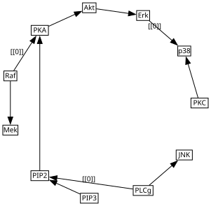

Sachs et al. 2005
[1]:
import random
import time
from causallearn.search.ConstraintBased.PC import pc
from causallearn.utils.cit import chisq
import pandas as pd
import cslearn.scoring as sc
import cslearn.learning as ctl
import numpy as np
%load_ext autoreload
%autoreload 2
/home/alex/projects/cstrees/code/.devenv/state/venv/lib/python3.13/site-packages/tqdm/auto.py:21: TqdmWarning: IProgress not found. Please update jupyter and ipywidgets. See https://ipywidgets.readthedocs.io/en/stable/user_install.html
from .autonotebook import tqdm as notebook_tqdm
Read data
[2]:
# Load the packaged copy of the observational Sachs data (resolves regardless
# of the working directory the notebook is run from). Equivalent to
# cslearn.examp_datasets.sachs_observational(binarized=False).
from importlib.resources import files
import cslearn.datasets
sachs = pd.read_csv(files(cslearn.datasets) / 'sachs_observational.csv')
As a pre-processing step, we make all variables binary.
[3]:
# Binarize data and add a row at the top of the dataframe containing variable cardinalities
sachsnp = sachs.to_numpy()
sachs2 = np.zeros([len(sachs), len(list(sachs.columns))], int)
for i in range(len(list(sachs.columns))):
sachs2[:,i] = pd.cut(sachsnp[:,i], 2, labels = False)
# add row with state space cardinalities
sachs2states = np.zeros([len(sachs) + 1, len(list(sachs.columns))], int)
sachs2states[0,:] = [2 for i in range(len(list(sachs.columns)))]
for i in range(len(sachs)):
sachs2states[i+1,:] = sachs2[i,:]
sachsdf = pd.DataFrame(sachs2states, columns = list(sachs.columns))
MCMC sampling
We run without restricting the parent sets according to a CPDAG (poss_cvars=None). To run with this restriction uncomment the commented lines of code and let the poss_cvars=poss_cvars in sc.order_score_tables.
[4]:
# pcgraph = pc(sachsdf[1:].values, 0.9, "chisq", node_names=sachsdf.columns)
# poss_cvars = ctl.causallearn_graph_to_posscvars(pcgraph, labels=sachsdf.columns)
# print("Possible context variables per node:", poss_cvars)
np.random.seed(1)
random.seed(1)
start = time.time()
score_table, context_scores, context_counts = sc.order_score_tables(sachsdf,
max_cvars=2,
alpha_tot=1.0,
method="BDeu",
poss_cvars=None)
orders, scores = ctl.gibbs_order_sampler(5000, score_table)
print('Score tables + Phase 2 (Gibbs order sampler) time in seconds:', time.time() - start)
Context score tables: 100%|██████████| 11/11 [00:00<00:00, 13.13it/s]
Creating #stagings tables: 100%|██████████| 11/11 [00:00<00:00, 197.92it/s]
Order score tables: 100%|██████████| 11/11 [01:33<00:00, 8.49s/it]
Gibbs order sampler: 100%|██████████| 5000/5000 [00:00<00:00, 7218.02it/s]
Score tables + Phase 2 (Gibbs order sampler) time in seconds: 94.99792098999023
Optimal variable ordering
[5]:
sachsmaporder = orders[scores.index(max(scores))]
print(sachsmaporder)
['Raf', 'PIP3', 'PLCg', 'PIP2', 'PKA', 'JNK', 'PKC', 'Akt', 'Erk', 'Mek', 'p38']
Get optimal tree for ordering
[6]:
# Phase 3: exact staging search over the MAP order (no CPDAG restriction here,
# so this is the gamma = infinity case). This cell produces the final learned
# CStree; `start` is still the timer from the score-tables/Gibbs cell, so this
# prints the end-to-end time for the whole pipeline.
sachsopttree = ctl._optimal_cstree_given_order(sachsmaporder, context_scores)
print('Full pipeline time in seconds:', time.time() - start)
Full pipeline time in seconds: 95.15494322776794
Dataframe representation
[7]:
sachsopttree.to_df()
[7]:
| Raf | PIP3 | PLCg | PIP2 | PKA | JNK | PKC | Akt | Erk | Mek | p38 | |
|---|---|---|---|---|---|---|---|---|---|---|---|
| 0 | 2 | 2 | 2 | 2 | 2 | 2 | 2 | 2 | 2 | 2 | 2 |
| 1 | * | - | - | - | - | - | - | - | - | - | - |
| 2 | * | * | - | - | - | - | - | - | - | - | - |
| 3 | * | 0 | * | - | - | - | - | - | - | - | - |
| 4 | * | 1 | 0 | - | - | - | - | - | - | - | - |
| 5 | * | 1 | 1 | - | - | - | - | - | - | - | - |
| 6 | * | * | * | 0 | - | - | - | - | - | - | - |
| 7 | 0 | * | * | 1 | - | - | - | - | - | - | - |
| 8 | 1 | * | * | 1 | - | - | - | - | - | - | - |
| 9 | * | * | 0 | * | * | - | - | - | - | - | - |
| 10 | * | * | 1 | * | * | - | - | - | - | - | - |
| 11 | * | * | * | * | * | * | - | - | - | - | - |
| 12 | * | * | * | * | 0 | * | * | - | - | - | - |
| 13 | * | * | * | * | 1 | * | * | - | - | - | - |
| 14 | * | * | * | * | * | * | * | 0 | - | - | - |
| 15 | * | * | * | * | * | * | * | 1 | - | - | - |
| 16 | 0 | * | * | * | * | * | * | * | * | - | - |
| 17 | 1 | * | * | * | * | * | * | * | * | - | - |
| 18 | * | * | * | * | * | * | 0 | * | * | * | - |
| 19 | * | * | * | * | * | * | 1 | * | 0 | * | - |
| 20 | * | * | * | * | * | * | 1 | * | 1 | * | - |
| 21 | - | - | - | - | - | - | - | - | - | - | - |
LDAG representation
Print the LDAG representation of the learned CStree model
[8]:
LDAG = sachsopttree.to_LDAG()
agraph = LDAG.plot_graphviz(args="-Goneblock=True -Gmindist=0.7",
prog="circo")
agraph.draw("sachs_CStree_LDAG.pdf")
agraph
[8]:
